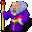

Wart¶{ .sprite }
| Type | NPC (can be spoken to; cannot be attacked) |
| Role | Shopkeeper |
| Found in | Museum |
| Entries in game data | 2 |
| Introduced | v0.8.5 |
2 entries in the game data
The game's data files define 2 separate characters named Wart. Andor's Trail stores a character as a new entry whenever it needs different behaviour, for example a different conversation at a later stage of a quest, a different location, or different combat statistics. Some entries represent the same person at different points in the story; others are different people who share a generic name. Here the entries differ in: conversation, location, loot or shop stock, movement. This page combines them; each entry is described in its own section below.
| Entry | Type | Location | Role |
|---|---|---|---|
ratdom_rat_warden |
NPC | Museum: ratdom_maze_624 | shopkeeper |
ratdom_rat_warden2 |
NPC | Museum: ratdom_maze_515 | shopkeeper |
Museum, Ratdom maze 624 (ratdom_rat_warden)¶
Entry ID: ratdom_rat_warden · Type: NPC · Role: Shopkeeper
Location: Museum: ratdom_maze_624
Shop stock¶
| Item | Chance | Qty |
|---|---|---|
| Orange rat necklace | 100% | 5 |
Quests¶
- Yellow is it: stages 310, 320, 321, 322, 323, 324, 325, 390
- Ratdom_maze (hidden flag): stage 132
- ratdom_nondisplay (hidden flag): stage 192
Dialogue simulator¶
Set the quest stages, items and other conditions that apply to your game, then start the conversation with Wart. The simulator applies the game's own rules: it performs the same silent checks, offers only the options that would be shown in the game, and applies their effects (quest stages, items handed over, rewards) as the conversation proceeds.
Rules verified against v0.8.18 game code (ConversationController.java) and dialogue data.
Dialogue (72 lines)
What the dialogue says, exactly as in the game files. Lines are listed once; links jump to the line a choice leads to.
ratdom_rat_warden Wart: “Yes please?”
- “I have found some bones. May I enter now?” (if reached stage 310 of Yellow is it; NOT reached stage 390 of Yellow is it) → ratdom_rat_warden_50
- “Who are you?” → ratdom_rat_warden_10
- “What are you doing here?” → ratdom_rat_warden_10
- “Could you tell me something about this place?” → ratdom_rat_warden_30
- “Oh, it's nothing. I just tried the bell.” → ratdom_rat_warden_20
- “Please give me back my cheese.” (if faction “ratdom_rat_cheese1” ≥ 1) → ratdom_rat_warden_cheese
- “Please give me back my cheese.” (if NOT faction “ratdom_rat_cheese1” ≥ 1; faction “ratdom_rat_cheese2” ≥ 1) → ratdom_rat_warden_cheese
- “Please give me back my cheese.” (if NOT faction “ratdom_rat_cheese1” ≥ 1; NOT faction “ratdom_rat_cheese2” ≥ 1; faction “ratdom_rat_cheese3” ≥ 1) → ratdom_rat_warden_cheese
- “Please give me back my cheese.” (if NOT faction “ratdom_rat_cheese1” ≥ 1; NOT faction “ratdom_rat_cheese2” ≥ 1; NOT faction “ratdom_rat_cheese3” ≥ 1; faction “ratdom_rat_cheese4” ≥ 1) → ratdom_rat_warden_cheese
ratdom_rat_warden_50 (silent check: the first matching branch below is taken)
- branch 1 (if hand over 1× Rat skull; hand over 4× Leg bones of a rat; hand over 1× Tail bones of a rat; hand over 1× Back bones of a rat; hand over 1× Rib bones of a rat) → ratdom_rat_warden_52
- branch 2 (if carry 1× Rat skull) → ratdom_rat_warden_60
- branch 3 (if carry 1× Leg bones of a rat) → ratdom_rat_warden_61
- branch 4 (if carry 1× Tail bones of a rat) → ratdom_rat_warden_65
- branch 5 (if carry 1× Back bones of a rat) → ratdom_rat_warden_66
- branch 6 (if carry 1× Rib bones of a rat) → ratdom_rat_warden_67
- branch 7 → ratdom_rat_warden_69
ratdom_rat_warden_10 Wart: “I am the warden of our Memorial Hall. I keep the exhibits in order and answer questions from visitors. Call me Wart.”
- “Could you tell me anything about this place?” → ratdom_rat_warden_30
- “Wart - really? [giggle]” → ratdom_rat_warden_20
- “OK, bye.” → conversation ends
ratdom_rat_warden_30 Wart: “This used to be a happy place of memories. Many objects and statues from the past invite you to linger and think. Every rat loved this place.”
- Next → ratdom_rat_warden_31
ratdom_rat_warden_20 Wart: “[Incomprehensible muttering]”
- “OK, just leave me then.” → NPC leaves
ratdom_rat_warden_cheese (silent check: the first matching branch below is taken)
- branch 1 (if faction “ratdom_rat_cheese1” ≥ 1) → ratdom_rat_warden_cheese_1
- branch 2 (if faction “ratdom_rat_cheese2” ≥ 1) → ratdom_rat_warden_cheese_2
- branch 3 (if faction “ratdom_rat_cheese3” ≥ 1) → ratdom_rat_warden_cheese_3
- branch 4 (if faction “ratdom_rat_cheese4” ≥ 1) → ratdom_rat_warden_cheese_4
- branch 5 → ratdom_rat_warden_cheese_50
ratdom_rat_warden_52 Wart: “Let's have a look. Oh, what are my old eyes seeing? King Rah is back, completely! I am overwhelmed with joy! You may pass now of course.” — effects: sets stage 390 of Yellow is it
- “I hope you can puzzle your king back together.” → ratdom_rat_warden_54
ratdom_rat_warden_60 Wart: “Wonderful! You've already recovered King Rah's head!”
- Next → ratdom_rat_warden_70
ratdom_rat_warden_61 Wart: “You've already recovered some of King Rah's legs.”
- Next → ratdom_rat_warden_70
ratdom_rat_warden_65 Wart: “Ah, you've already recovered King Rah's tail!”
- Next → ratdom_rat_warden_70
ratdom_rat_warden_66 Wart: “Good, you've already recovered King Rah's back bone.”
- Next → ratdom_rat_warden_70
ratdom_rat_warden_67 Wart: “Great! These bones look like King Rah's ribs!”
- Next → ratdom_rat_warden_70
ratdom_rat_warden_69 Wart: “Please go and find all of King Rah's bones.”
- Next → ratdom_rat_warden_80
ratdom_rat_warden_31 Wart: “Well, almost every rat.”
- Next → ratdom_rat_warden_32
ratdom_rat_warden_cheese_1 (silent check: the first matching branch below is taken) — effects: faction “ratdom_rat_cheese1” -1, gives 1× Cheese
- branch 1 (if faction “ratdom_rat_cheese1” ≥ 1) → ratdom_rat_warden_cheese_1
- branch 2 → ratdom_rat_warden_cheese
ratdom_rat_warden_cheese_2 (silent check: the first matching branch below is taken) — effects: faction “ratdom_rat_cheese2” -1, gives 1× Charwood cheddar
- branch 1 (if faction “ratdom_rat_cheese2” ≥ 1) → ratdom_rat_warden_cheese_2
- branch 2 → ratdom_rat_warden_cheese
ratdom_rat_warden_cheese_3 (silent check: the first matching branch below is taken) — effects: faction “ratdom_rat_cheese3” -1, gives 1× Blue cheese
- branch 1 (if faction “ratdom_rat_cheese3” ≥ 1) → ratdom_rat_warden_cheese_3
- branch 2 → ratdom_rat_warden_cheese
ratdom_rat_warden_cheese_4 (silent check: the first matching branch below is taken) — effects: faction “ratdom_rat_cheese4” -1, gives 1× Goat cheese
- branch 1 (if faction “ratdom_rat_cheese4” ≥ 1) → ratdom_rat_warden_cheese_4
- branch 2 → ratdom_rat_warden_cheese
ratdom_rat_warden_cheese_50 Wart: “Sure, here you are.”
- “Thank you. Here, have some coins.” (if pay 2 gold) → ratdom_rat_warden_cheese_52
- “Wasn't there one or two more pieces of cheese?” → ratdom_rat_warden_cheese_54
ratdom_rat_warden_54 (silent check: the first matching branch below is taken)
- Next (if random chance (25%)) → ratdom_rat_warden_54d
- Next (if random chance (33%)) → ratdom_rat_warden_54c
- Next (if random chance (50%)) → ratdom_rat_warden_54b
- Next → ratdom_rat_warden_54a
ratdom_rat_warden_70 (silent check: the first matching branch below is taken)
- branch 1 (if carry 4× Leg bones of a rat; carry 1× Tail bones of a rat; carry 1× Back bones of a rat; carry 1× Rib bones of a rat) → ratdom_rat_warden_70a
- branch 2 (if carry 1× Rat skull; carry 1× Tail bones of a rat; carry 1× Back bones of a rat; carry 1× Rib bones of a rat) → ratdom_rat_warden_71a
- branch 3 (if carry 1× Rat skull; carry 4× Leg bones of a rat; carry 1× Back bones of a rat; carry 1× Rib bones of a rat) → ratdom_rat_warden_75a
- branch 4 (if carry 1× Rat skull; carry 4× Leg bones of a rat; carry 1× Tail bones of a rat; carry 1× Rib bones of a rat) → ratdom_rat_warden_76a
- branch 5 (if carry 1× Rat skull; carry 4× Leg bones of a rat; carry 1× Tail bones of a rat; carry 1× Back bones of a rat) → ratdom_rat_warden_77a
- branch 6 → ratdom_rat_warden_79
ratdom_rat_warden_80 Wart: “I can't let you enter our Memorial Hall. We have to get back our skeleton statue of King Rah first.” — effects: sets stage 310 of Yellow is it
- “OK. I will find the bones for you.” → ratdom_rat_warden_90
- “This maze is terrible. Do you have any idea how I could find my way out again?” → ratdom_rat_warden_82
- “Do you have any idea where I should go looking for your bones?” → ratdom_rat_warden_90
ratdom_rat_warden_32 Wart: “But Fraedro was filled with jealousy and consumed with envy.”
- “Yes, it is always the same thing.” → ratdom_rat_warden_33
- “Sigh. I know that story already. Get to the point.” (if reached stage 310 of Yellow is it) → ratdom_rat_warden_44b
ratdom_rat_warden_cheese_52 Wart: “2 gold coins - how very generous.”
- Next → ratdom_rat_warden_cheese_53
ratdom_rat_warden_cheese_54 Wart: “Insolence. I'll pretend that I didn't hear it.”
ratdom_rat_warden_54d Wart: “I am so grateful.”
- Next → ratdom_rat_warden_54
ratdom_rat_warden_54c Wart: “Thanks!”
- Next → ratdom_rat_warden_54
ratdom_rat_warden_54b Wart: “Thank you a thousand times!”
- Next → ratdom_rat_warden_54
ratdom_rat_warden_54a Wart: “Thank you!”
- Next → ratdom_rat_warden_54
ratdom_rat_warden_70a Wart: “Let's have a look ... Great! Only King Rah's head is missing. You will find it too, I am sure.” — effects: sets stage 321 of Yellow is it
- “Of course.” → conversation ends
- “I hope it is worth the hard work.” → conversation ends
ratdom_rat_warden_71a Wart: “Let's have a look ... Great! Now we only need the fourth leg. You will find it too, I am sure.” — effects: sets stage 325 of Yellow is it
- “Of course.” → conversation ends
- “I hope it is worth the hard work.” → conversation ends
ratdom_rat_warden_75a Wart: “Let's have a look ... Great! Only King Rah's tail is missing. You will find it too, I am sure.” — effects: sets stage 324 of Yellow is it
- “Of course.” → conversation ends
- “I hope it is worth the hard work.” → conversation ends
ratdom_rat_warden_76a Wart: “Let's have a look ... Great! Only King Rah's back bone is missing. You will find it too, I am sure.” — effects: sets stage 322 of Yellow is it
- “Of course.” → conversation ends
- “I hope it is worth the hard work.” → conversation ends
ratdom_rat_warden_77a Wart: “Let's have a look ... Great! Only King Rah's rib bones are missing. You will find them too, I am sure.” — effects: sets stage 323 of Yellow is it
- “Of course.” → conversation ends
- “I hope it is worth the hard work.” → conversation ends
ratdom_rat_warden_79 Wart: “Let's have a look ... In total we need the head, the ribs and the back bone, 4 legs and the tail of course.” — effects: sets stage 320 of Yellow is it
- “OK, I'll be back.” → conversation ends
ratdom_rat_warden_90 Wart: “The cave system is huge and really very confusing. It already surprised me how you found your way to me here.”
- Next → ratdom_rat_warden_91
ratdom_rat_warden_82 Wart: “That is easy. Just choose the exit where you see rats in front of it. Rats always know their way out.”
- Next → ratdom_rat_warden_84
ratdom_rat_warden_33 Wart: “How he hated it when visitors crowded these halls around the valuable exhibits and admired the statues.”
- Next → ratdom_rat_warden_34
ratdom_rat_warden_44b Wart: “For security reasons, we don't let anyone in or out until King Rah is back in his accustomed place.”
- “Even 100 pieces of gold wouldn't change your mind?” → ratdom_rat_warden_46a
- “If the skeleton is back, may I pass?” (if NOT reached stage 390 of Yellow is it) → ratdom_rat_warden_48
- “I want to talk with Fraedro.” (if NOT reached stage 395 of Yellow is it) → ratdom_rat_warden_46b
- “What lies behind this blocked passage?” → ratdom_rat_warden_46c
- “May I enter?” (if reached stage 310 of Yellow is it; NOT reached stage 390 of Yellow is it) → ratdom_rat_warden_50
ratdom_rat_warden_cheese_53 Wart: “[low voice] Scrooge.”
ratdom_rat_warden_91 Wart: “Maybe you'll find wisdom in my compass?”
- “What compass?” → ratdom_rat_warden_92
ratdom_rat_warden_84 (silent check: the first matching branch below is taken)
- Next (if reached stage 10 of ratdom_nondisplay (hidden flag)) → ratdom_rat_warden_86
- Next → ratdom_rat_warden_80
ratdom_rat_warden_34 Wart: “He wanted to be the center of attention. A larger-than-life statue of himself should dominate the room, he thought.”
- “Such a braggart.” → ratdom_rat_warden_35
ratdom_rat_warden_46a Wart: “Of course not! This door will remain closed until King Rah returns.”
- “Sorry.” → ratdom_rat_warden_44b
ratdom_rat_warden_48 Wart: “If King Rah is with us again, that would be great! Of course you can then go to our memory hall. You would be our guest of honor.” — effects: sets stage 310 of Yellow is it
- Next → ratdom_rat_warden_48a
ratdom_rat_warden_46b Wart: “Impossible! No way.”
- Next → ratdom_rat_warden_44b
ratdom_rat_warden_46c Wart: “The memory hall of course.”
- Next → ratdom_rat_warden_44d
ratdom_rat_warden_92 Wart: “Start at the entrance where you entered the lower part of these caves.”
- Next → ratdom_rat_warden_94
ratdom_rat_warden_86 Clevred: “Didn't I tell you?”
- “You talk all the time and too much anyway. I can't always listen to that.” → ratdom_rat_warden_80
ratdom_rat_warden_35 Wart: “He hated especially the fully preserved skeleton of King Rah, the powerful founder of this empire. It was particularly brilliant: King Rah, standing upright, his dreaded sword in his bony right hand.”
- Next → ratdom_rat_warden_36
ratdom_rat_warden_48a Wart: “But we are not there yet.”
- Next → ratdom_rat_warden_80
ratdom_rat_warden_44d Wart: “And another tunnel, but only a short distance and a dead end.”
- Next → ratdom_rat_warden_44e
ratdom_rat_warden_94 Wart: “There you put on the necklace with my compass. With this compass you may perceive otherwise invisible signs on the walls. Follow these.”
- “What signs?” → ratdom_rat_warden_95
ratdom_rat_warden_36 Wart: “Yes, King Rah was a great leader. Many battles were fought against the monsters that came out of the rift. But when the superiority became too great, Rah led his people into the caves under the Blackwater Mountains and founded a new…”
- Next → ratdom_rat_warden_37
ratdom_rat_warden_44e Wart: “We never go there, there are scary noises coming from there.”
- “Finally light at the end of the tunnel.” → ratdom_rat_warden_44b
ratdom_rat_warden_95 Wart: “Shields in orange and yellow color. Orange for the main route and yellow for short side tunnels.”
- “What?” → ratdom_rat_warden_95_10
- “OK.” → ratdom_rat_warden_96
ratdom_rat_warden_37 Wart: “The wise King Rah had the existing caves further expanded as protection.”
- “That's why the passages are laid out so confusingly?” → ratdom_rat_warden_38
ratdom_rat_warden_95_10 Wart: “Should there be a branch, there will be an additional flag. The side trip is marked with a yellow shield.”
- “What?” → ratdom_rat_warden_95_20
ratdom_rat_warden_96 Wart: “It will be a far journey. But you will meet everything that you need to meet. And even more.”
- “This is finally good news.” → ratdom_rat_warden_98
ratdom_rat_warden_38 Wart: “Right. This should be additional protection from enemies.”
- “Interesting. But why is the passage here closed now?” → ratdom_rat_warden_40
ratdom_rat_warden_95_20 Wart: “Sigh. If you see an orange shield together with a flag, then first look for another passage marked with a yellow shield.”
- “And then?” → ratdom_rat_warden_95_30
ratdom_rat_warden_98 Wart: “Beware! It slows you down, because your mind is clouded and partly in another dimension.”
- “No problem. Show me this wonderful item.” → shop opens
- “However, I am as poor as a church rat.” (if NOT have 5,555 gold; NOT reached stage 192 of ratdom_nondisplay (hidden flag)) → ratdom_rat_warden_99
ratdom_rat_warden_40 Wart: “One bad day I found this place ransacked! Only an empty pedestal remained where the richly decorated skeleton of King Rah had been.”
- “No.” → ratdom_rat_warden_41
- “How did that happen?” → ratdom_rat_warden_42
ratdom_rat_warden_95_30 Wart: “Follow this passage to the end. You might find something important there. Then go back to the crossing and follow the orange shield again.” — effects: sets stage 132 of Ratdom_maze (hidden flag), starts timer “ratdom_compass_tour”
- “Eh, OK. Got it.” (if reached stage 10 of ratdom_nondisplay (hidden flag)) → ratdom_rat_warden_95_40
- “Eh, OK. Got it.” (if NOT reached stage 10 of ratdom_nondisplay (hidden flag)) → ratdom_rat_warden_95_41
ratdom_rat_warden_99 Wart: “Well, I have too good a heart. Here, take the amulet for 100 gold pieces.”
- “Oh thank you! Here is the gold.” (if pay 100 gold) → ratdom_rat_warden_99a
- “I will think about it.” → conversation ends
ratdom_rat_warden_41 Wart: “Yes.”
- “Ooh.” → ratdom_rat_warden_42
ratdom_rat_warden_42 Wart: “This was probably Fraedro's most terrifying act. We found him and confronted him.”
- “Such a miserable villain!” → ratdom_rat_warden_44
- “Did he admit it?” → ratdom_rat_warden_44
ratdom_rat_warden_95_40 Clevred: “[muttering] I want to hope so, but I don't really believe it yet.”
- Next → ratdom_rat_warden_96
ratdom_rat_warden_95_41 Wart: “[muttering] I want to hope so, but I don't really believe it yet.”
- Next → ratdom_rat_warden_96
ratdom_rat_warden_99a (silent check: the first matching branch below is taken) — effects: gives 1× Orange rat necklace, sets stage 192 of ratdom_nondisplay (hidden flag)
ratdom_rat_warden_44 Wart: “Of course he denied everything, that hypocrite! But who else could have done it?”
- Next → ratdom_rat_warden_44a
ratdom_rat_warden_44a Wart: “He deserved immediate death for this terrible act. However, we only locked him up until he would reveal where he stashed our beloved royal skeleton.”
- Next → ratdom_rat_warden_44b
Version history¶
| Version | Change |
|---|---|
| v0.8.5 | Added Dialogue: 72 lines added |
Verified against v0.8.18 and every earlier release back to v0.7.0 (game data compared release by release).
Technical information (ratdom_rat_warden)
| Entry ID | ratdom_rat_warden |
| Spawn group | ratdom_rat_warden |
| Loot table | ratdom_rat_warden |
| Conversation | ratdom_rat_warden |
| Faction | – |
| Movement | wholeMap |
| Icon | monsters_rltiles3:10 |
| Defined in | res/raw/monsterlist_ratdom.json |
Raw data:
{
"id": "ratdom_rat_warden",
"name": "Wart",
"iconID": "monsters_rltiles3:10",
"movementAggressionType": "wholeMap",
"phraseID": "ratdom_rat_warden",
"droplistID": "ratdom_rat_warden"
}
Museum, Ratdom maze 515 (ratdom_rat_warden2)¶
Entry ID: ratdom_rat_warden2 · Type: NPC · Role: Shopkeeper
Location: Museum: ratdom_maze_515
Shop stock¶
| Item | Chance | Qty |
|---|---|---|
| Orange rat necklace | 100% | 5 |
| Gold coins | 100% | 1 to 5 |
Quests¶
- Yellow is it: stage 395
Dialogue simulator¶
Set the quest stages, items and other conditions that apply to your game, then start the conversation with Wart. The simulator applies the game's own rules: it performs the same silent checks, offers only the options that would be shown in the game, and applies their effects (quest stages, items handed over, rewards) as the conversation proceeds.
Rules verified against v0.8.18 game code (ConversationController.java) and dialogue data.
Dialogue (17 lines)
What the dialogue says, exactly as in the game files. Lines are listed once; links jump to the line a choice leads to.
ratdom_rat_warden2 Wart: “Welcome to our great rat memory hall! Shall I tell you something about our great expositions?”
- “Thank you, I'll find my way.” → conversation ends
- “Why is here an empty pedestal?” (if NOT reached stage 130 of ratdom_nondisplay (hidden flag)) → ratdom_rat_warden2_r_1
- “I want to visit Fraedro.” (if NOT reached stage 130 of Yellow is it) → ratdom_rat_warden2_r_14
- “Do you have anything for sale?” → shop opens
- “Please give me back my cheese.” (if faction “ratdom_rat_cheese1” ≥ 1) → ratdom_rat_warden2_cheese
- “Please give me back my delicious Charwood cheddar.” (if NOT faction “ratdom_rat_cheese1” ≥ 1; faction “ratdom_rat_cheese2” ≥ 1) → ratdom_rat_warden2_cheese
- “Please give me back my moldy blue cheese.” (if NOT faction “ratdom_rat_cheese1” ≥ 1; NOT faction “ratdom_rat_cheese2” ≥ 1; faction “ratdom_rat_cheese3” ≥ 1) → ratdom_rat_warden2_cheese
- “Please give me back my goat cheese.” (if NOT faction “ratdom_rat_cheese1” ≥ 1; NOT faction “ratdom_rat_cheese2” ≥ 1; NOT faction “ratdom_rat_cheese3” ≥ 1; faction “ratdom_rat_cheese4” ≥ 1) → ratdom_rat_warden2_cheese
ratdom_rat_warden2_r_1 Wart: “Here stood the statue of King Rah. I told you about it.”
- Next → ratdom_rat_warden2_r_2
ratdom_rat_warden2_r_14 Wart: “For security reasons, we don't let anyone talk with Fraedro until he finally admits everything.”
- “I did find the skeleton. Can Fraedro be released now?” → ratdom_rat_warden2_r_15
- “Can I speak to Fraedro? Maybe he regrets what he did and wouldn't do it again.” (if NOT reached stage 390 of Yellow is it) → ratdom_rat_warden2_r_16
- “I don't think it was Fraedro.” → ratdom_rat_warden2_r_17
ratdom_rat_warden2_cheese Wart: “Sure. Let's go outside.” — effects: spawns monsters on ratdom_maze_624
ratdom_rat_warden2_r_2 Wart: “Thank you for bringing the bones back to me. But I still have to put them back together.”
- Next → ratdom_rat_warden2_r_3
ratdom_rat_warden2_r_15 Wart: “Of course not. He would steal the bones just one more time.”
- “You have a sad opinion of your fellow rats.” → ratdom_rat_warden2_r_15a
- “Can I speak to Fraedro? Maybe he regrets what he did and wouldn't do it again.” → ratdom_rat_warden2_r_16
ratdom_rat_warden2_r_16 Wart: “No, you can't speak to Fraedro. It is too dangerous.”
- “Well, I have 100 gold pieces here. Can I speak to Fraedro?” (if have 100 gold) → ratdom_rat_warden2_r_16a
- “I would like to offer him 100 gold pieces to let me through, but I don't have enough with me.” (if NOT have 100 gold) → conversation ends
- “Maybe it wasn't Fraedro after all?” → ratdom_rat_warden2_r_17
- “Alright, I think I'll take a look at the rest of the exhibition now.” → conversation ends
ratdom_rat_warden2_r_17 Wart: “Of course he was. It couldn't have been otherwise. Go now please, I have work to do.”
ratdom_rat_warden2_r_3 Wart: “Until then, our great museum will have to do without this highlight of the exhibition.”
- “Too bad.” → ratdom_rat_warden2_r_14
ratdom_rat_warden2_r_15a Wart: “They're just rats. What do you expect?”
- “Can I speak to Fraedro? Maybe he regrets what he did and wouldn't do it again.” → ratdom_rat_warden2_r_16
ratdom_rat_warden2_r_16a Wart: “You think you could bribe me for a ridiculous 100 gold pieces?”
- “Eh, no. Of course not. Sorry. I'd better leave.” → conversation ends
- “Well, if you don't want the gold ...” (if pay 100 gold) → ratdom_rat_warden2_r_16b
ratdom_rat_warden2_r_16b Wart: “Wait! [He takes the gold hastily] Sure you can talk to Fraedro. Do you see the stairs over there? Just walk along there, you can't miss it.” — effects: sets stage 395 of Yellow is it
- “OK, bye.” → ratdom_rat_warden2_r_16c
ratdom_rat_warden2_r_16c Wart: “I hope you don't think I'll keep the gold for myself. I will use it for the museum.”
- “Sure, bye.” → ratdom_rat_warden2_r_16d
ratdom_rat_warden2_r_16d Wart: “You do not believe me!”
- “Yes, of course I believe you. But I have to go on.” → ratdom_rat_warden2_r_16e
ratdom_rat_warden2_r_16e Wart: “I'm honest as a church rat. Yes indeed.”
- “Bye.” → ratdom_rat_warden2_r_16f
ratdom_rat_warden2_r_16f Wart: “I am a little offended that you would accuse me of something despicable like accepting gold.”
- “But I just want to go.” → ratdom_rat_warden2_r_16x
ratdom_rat_warden2_r_16x Wart: “Yes, go now, and don't keep me from my work.”
- “??” → conversation ends
Version history¶
| Version | Change |
|---|---|
| v0.8.5 | Added Dialogue: 17 lines added |
Verified against v0.8.18 and every earlier release back to v0.7.0 (game data compared release by release).
Technical information (ratdom_rat_warden2)
| Entry ID | ratdom_rat_warden2 |
| Spawn group | ratdom_rat_warden2 |
| Loot table | ratdom_rat_warden2 |
| Conversation | ratdom_rat_warden2 |
| Faction | – |
| Movement | – |
| Icon | monsters_rltiles3:10 |
| Defined in | res/raw/monsterlist_ratdom.json |
Raw data:
{
"id": "ratdom_rat_warden2",
"name": "Wart",
"iconID": "monsters_rltiles3:10",
"phraseID": "ratdom_rat_warden2",
"droplistID": "ratdom_rat_warden2"
}
Community notes¶
Written by players, not generated from game data. Observations: what players notice in-game · Lore: the in-world story · Trivia: real-world facts, references, development history · Theory / speculation: unconfirmed ideas; may just be unfinished content
Observations¶
No notes yet. Contributions are welcome: add a note.
Lore¶
No notes yet. Contributions are welcome: add a note.
Trivia¶
No notes yet. Contributions are welcome: add a note.
Theory / speculation¶
No notes yet. Contributions are welcome: add a note.
Data from v0.8.18